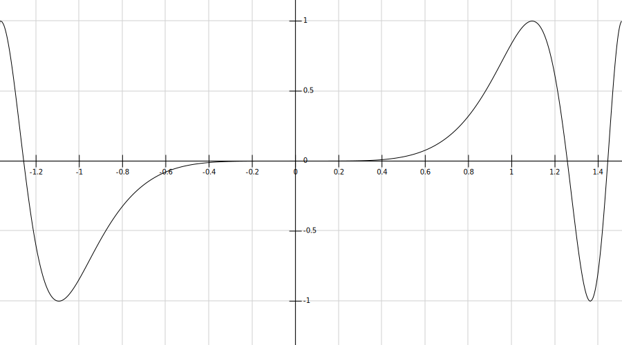

Bienvenue sur mon site ! J'ai pensé que c'était cool comme lieu pour apprendre.
Pour commencer, ceci est un devoir maison facultatif. Mais je t'invite bien-sûr à le faire!
Je te propose de noter ce devoir, si tu veux, afin d'obtenir un score qui t'indiquera où tu en es.
Les consignes sont écrites ici, accessibles quand tu veux. Je te suggère de faire ce devoir en plusieurs fois.
Tu as bien-sûr le droit de demander de l'aide. Il te suffit de me poser tes questions par téléphone, je te donnerai des indices. Profites-en !
À la fin, je souhaiterais que tu puisses m'envoyer en photos ta copie, comme si c'était un vrai devoir maison.
Je souhaiterais aussi avoir les photos de tes brouillons, ce qui me permettra éventuellement de te donner des points bonus sur ton organisation.
Pour finir, je noterai aussi ton raisonnement. Autrement dit, il te faudra rédiger des phrases au moment de montrer tes calculs et résultats.
Bon courage !!
Exercice 1 : Je te veux dans mon équipe
Exercice 3 : L'abominable fonction des neiges mathématique
Exercice 4 : Ne jamais croiser les effluves. Pourquoi ? Ce serait mal
Exercice Bonus : C'est qui le patron ?
Question 1 : Pour chacun des symboles suivants, nommer l'ensemble de définition correspondant, et donner 3 nombres leur appartiennant à titre d'exemple.
Remarque: Ne pas commencer la question 2 avant que nous ayons corrigé la question 1 ensemble.
Question 2 : Pour chacun des nombres suivants, indiquer à quel ensemble de definition il appartient. Si possible simplifier les nombres. Enfin, il faut utiliser les notations mathématiques quand cela est possible.
Le sais-tu ? Les options 3,8,9,10,11 de cette liste sont écrites en "notation scientifique". C'est une manière courante de représenter les petits et grands nombres, cela évite d'écrire tous les zeros !
Parfois, il arrive que pour désigner plusieurs individus il est plus simple d'utiliser la formulation "tout le monde sauf quelque-uns".
C'est pareil avec les domaines de définitions!
Déterminer le domaine de définition des fonctions suivantes:
f(x) = 1
g(f) = 2f
h(i) = 0
i(t) =
j(t) =
k(t) =
l(t) =
m(t) =
Voici le graphe de la fonction A (comme abominable 😋). Elle ne le sera plus dès que tu auras établi son tableau de variation.
Voici 3 fonctions, chacune représentée par une droite:
Et pour tracer une droite il faut connaître au moins 2 de ses points (donc calculer les coordonnées de 2 de ses points).
Soit maintenant les points A, B et C tels que :
Dessiner le triangle ABC, et calculer graphiquement les coordonnées des points A, B et C.
Le sais-tu ? Les fonctions de la forme f(x) = ax + b avec 'a' et 'b' des constantes quelconques, sont appelées "fontions lineaires". Cela provient du fait que quand on les trace on obtient des "lignes" droites.
Combien font 7 x 8 ? Et as tu un mémo technique pour ce calcul ?
Je ne perds jamais, soit je gagne, soit j'apprends. Nelson Mandela